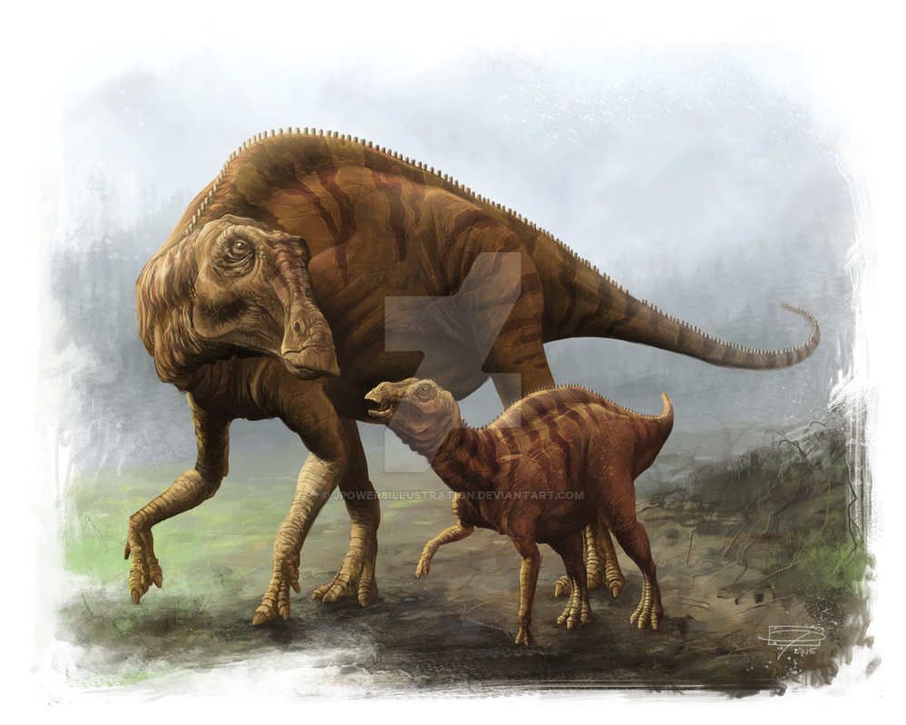

Maiasaura is a large, herbivore that lived 65 to 80 million years ago during the late Cretaceous Period.
This dinosaur was first discovered in 1979 by Jack Horner and Robert Makela in Montana.
They then named it Maiasaura—a name which means “caring mother lizard.” They gave this dinosaur that
name because they found its fossils in the same area as large fossilized nests.
Maiasaura was approximately 30 feet long, 8 feet tall and probably weighed around 4 tons.
It was a duck-billed dinosaur that had a flattened skull and bony crests positioned in front of its eyes.
Its beak didn’t have any teeth, but this dinosaur did have cheek teeth—and many sharp ones at that.
This would have allowed it to process plant material at a pretty fast pace. Plant material that probably
consisted of seed ferns, conifers, gingko and berries. Which is a good thing it could process these
plants quickly, because scientists estimate that it took approximately 200 to 250 pounds of plant
material daily to keep this dinosaur healthy.
Since this dinosaur was found in what is now known as ‘egg mountain’,
paleontologists have concluded that it probably cared for its young.
They have also concluded that this mountain was a giant maternity ward because all
of the nests were approximately 7 feet apart. If this is true, then this would mean the
dinosaurs flocked to this mountain to take care of all of their young at once.
An interesting fact about Maiasaura, is that even though these dinosaurs walked on all fours,
it was not as slow as some other herbivores at the same. Some paleontologists have stated that
they believe this dinosaur to have been capable of moving at a speed of about 25 miles per hour.
This would have allowed it to escape carnivores. It may have also been able to butt predators, much
like a rhinoceros, if it got cornered.